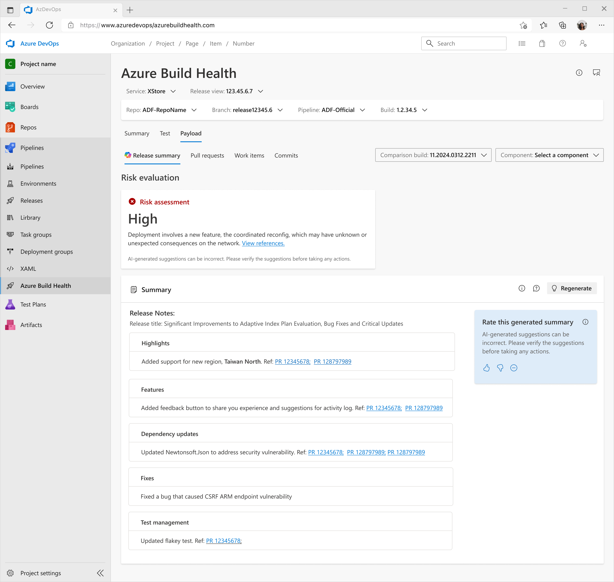
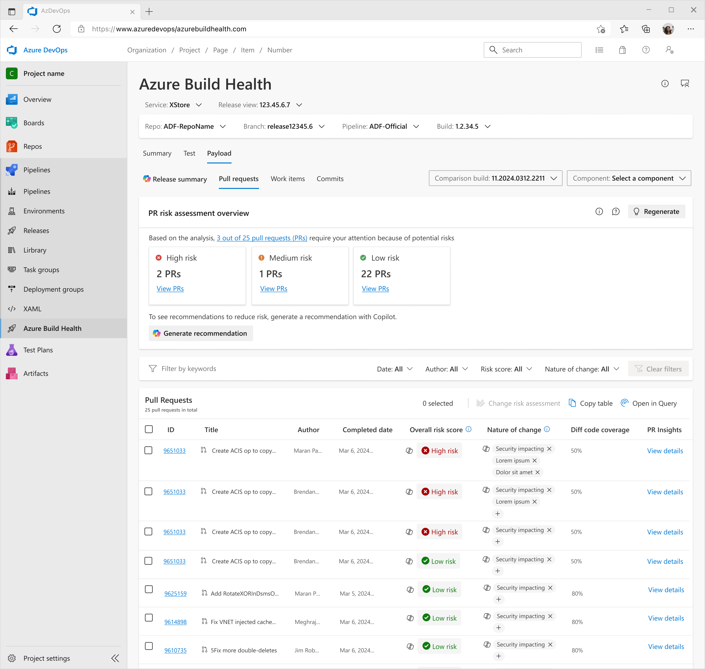
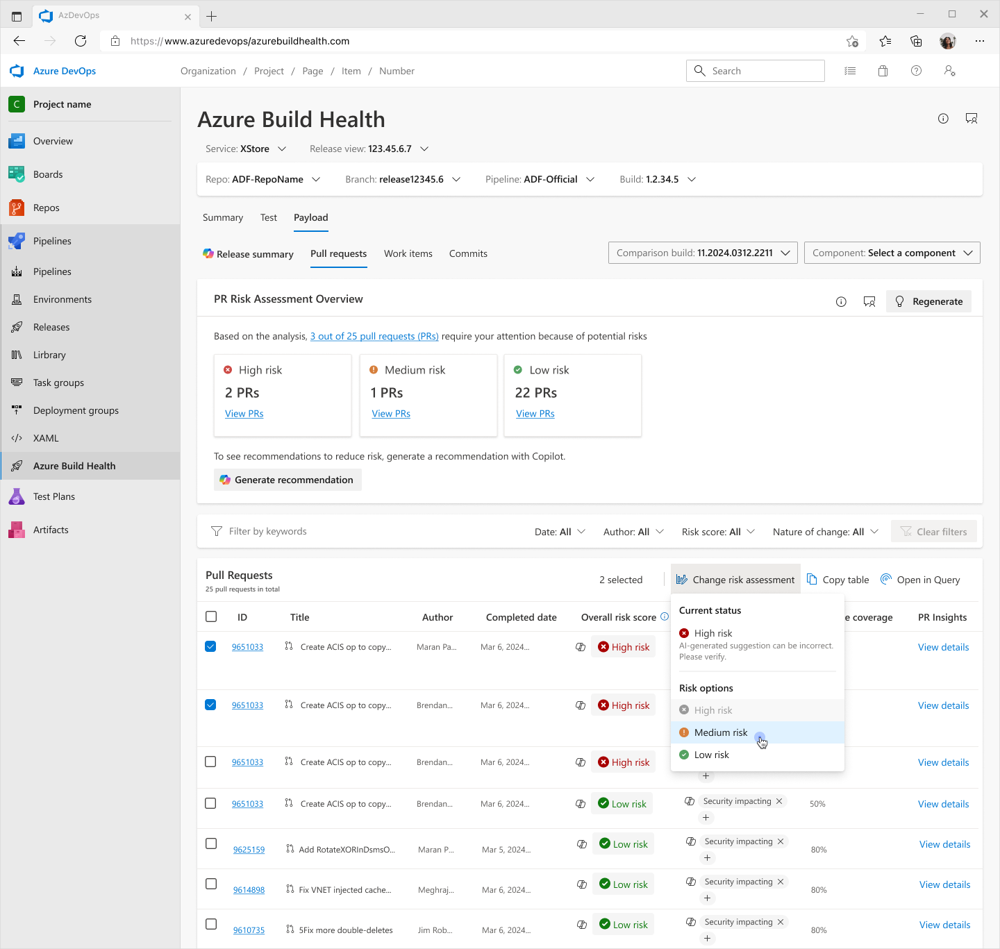
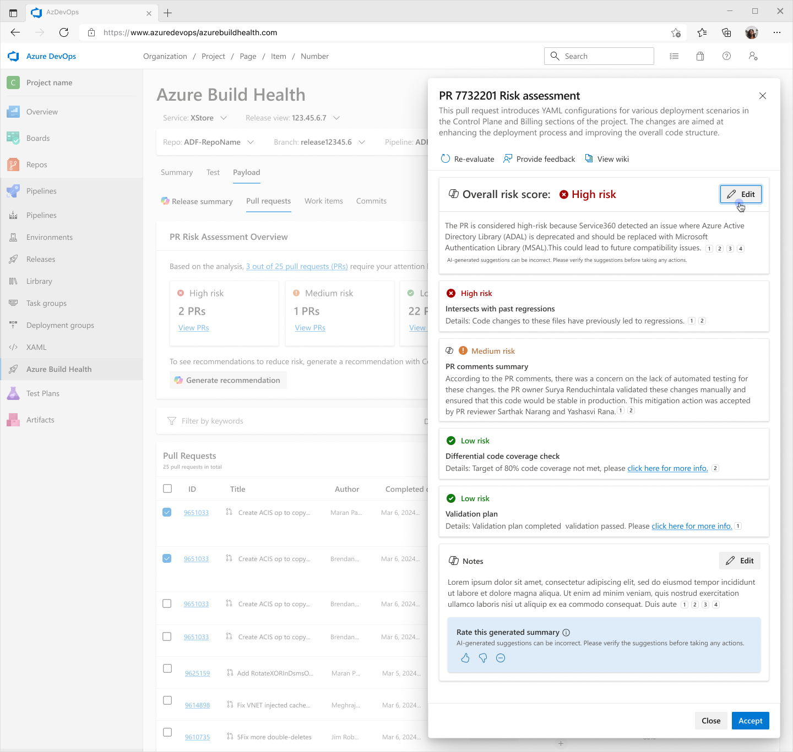
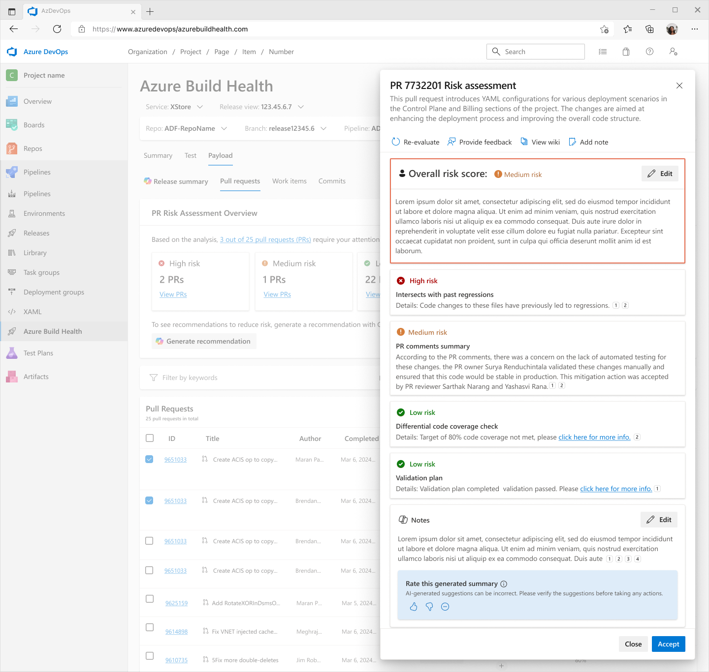
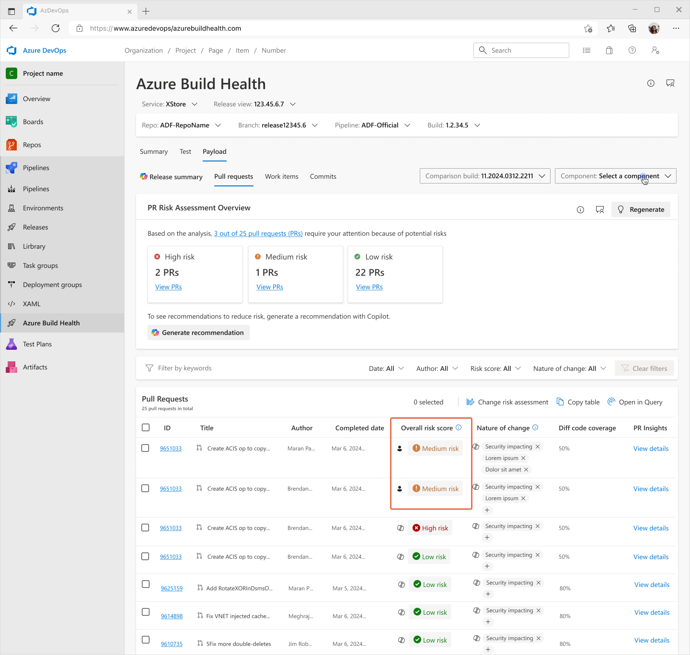

Overview
Adding AI to an engineering tool — without a chatbot
Azure Build Health is an internal Microsoft tool used by Release Managers to evaluate the safety and quality of code changes before deployment. When the team decided to explore Generative AI, there was no template to follow. No established pattern. No prior art inside Microsoft for embedding AI directly into an engineering workflow like this.
I was the lead designer embedded across two cross-functional teams — the Azure Build Health engineering team and Microsoft Copilot developers. We knew AI could reduce manual effort, but not what form it should take, what users would trust, or what "good" even looked like.
How do you introduce AI into a high-stakes engineering workflow where wrong information causes outages — without eroding user trust or replacing the human judgment that release managers rely on?
Discovery
Identifying the pains
Before any design work, I conducted 8 discovery interviews (45–60 minutes each) with our core users: Release Managers. The goal was to understand their end-to-end release process, how long preparation took, and where the biggest friction points lived.
Here is a quote from one of our core users explaining how long it takes them to complete their tasks:
"Every time we go to R2D, I go commit by commit, looking at the summary to get a sense of the risk — and with that risk then I try to get a measurement of the overall risk of a given release. As you can imagine, this is a very time consuming, somewhat subjective manual process."
— MDM Release ManagerFrom the interviews, I identified two major themes and three core user problems:
Design Process
Finding a place for AI
One of the first design decisions was where AI output should live. After mapping the existing Payload tab — where Release Managers already spend the majority of their time — it became clear this was the right home. It's where release information is collected, evaluated, and acted on.

Annotated Payload tab — identifying where time was being lost and where AI could add value
From there I worked through the design in layers — each addressing one of the core user problems surfaced in research:






Working with the team
Raising UX maturity
This project required me to introduce a user-centered design process to an engineering team that had never worked with a designer before. I embedded UX methodologies into their workflow — shifting focus from what to build to why we were building it.
After release we held a postmortem. My contributions improved the team's UX maturity across four dimensions:
Post Deployment
What we measured
After release, early adopters flagged inaccuracies in Copilot-generated data. A follow-up usability study was planned to evaluate both usefulness and usability — which became the foundation for Iteration 2.
Even with the noted inaccuracies, the feature delivered measurable value. We saw a 75% reduction in time spent on manual release review, and feature adoption among the target developer audience grew by 60% post-launch — a strong signal that the core concept resonated, even as the AI output needed refinement.